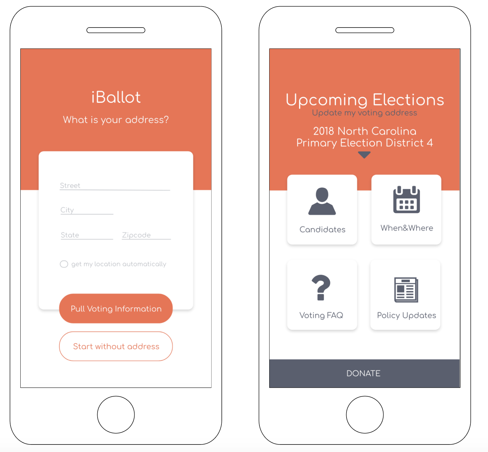

iBallot
Prototype

iBallot is a pre-startup project I am working on in Reese News Lab at UNC School of Media and Journalism. Identifying the problem of low turn out rate of young voters, aged 18 to 24, in local and state election, I, partnered 4 other students, designed a voting app that wish to provide young voters in North Carolina with information of when to vote, where to vote, who they can vote for, and what issues and policy are being debated in state and local legislature.
In this project, I went through the whole design thinking process: ideate, define, design and develop.
I was in charge of the feasibility part, where I conducted user interviews, determined the product functionalities, and prototyped in Adobe Experience Design.
Click to View Prototype
Click to View Final Report